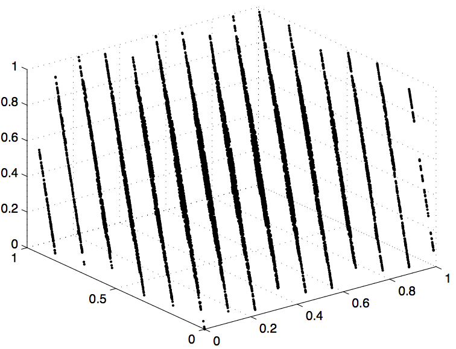

COMPUTER PROBLEMS 9.1
\(\def\ds{\displaystyle} \)
1 Implement the Minimal Standard Generator
with seed \(x_0=1\).
After generating each three numbers \(x,y,z\), check whether
\((x-1/3)^2+(y-1/3)^2+(z-1/2)^2 < 0.04^2\). Of \(10^6\) triples, 273
satisfy the inequality. The area estimate is therefore \(0.000273\).
The correct volume of a sphere of radius \(0.04\) is \(\frac{4}{3}\pi (0.04)^3
\approx 0.000268\). The error is \(\approx 5\times 10^{-6}\). Of course,
different seeds will produce different estimates.
3 (a) The area between the curves is
\[\int_0^1-x^2+x+\frac{1}{2}-(x^2-x+\frac{1}{2})\ dx = \int_0^1(-2x^2+2x)\ dx
= \frac{1}{3}.\]
3 (b) Estimates will depend on the random number generator and seed
used. As an example, we apply the Minimal Standard Generator with seed
\(x_0=1\). For each uniform random number \(x\) in \([0,1]\), evaluate \(P_2(x)
-P_1(x)\) and average the results to approximate the area. The results are
given below.
3 (c) As a Type 2 Monte-Carlo problem, generate two uniform random
numbers \((x,y)\) and decide whether the two-dimensional point lies in
the region by checking \(P_1(x)< y< P_2(x)\). The proportion of points that
satisfy the inequality is the approximate area.
\[
\text{(b)}\ \ \ \
\begin{array}{ccc}
n&\text{Type 1 estimate}&\text{error}\\
10^{2}& 0.327290& 0.006043\\
10^{3}& 0.342494& 0.009161\\
10^{4}& 0.332705& 0.000628\\
10^{5}& 0.333610& 0.000277\\
10^{6}& 0.333505& 0.000172\\
\end{array}\ \ \ \ \ \ \ \
\text{(c)}\ \ \ \
\begin{array}{ccc}
n&\text{Type 2 estimate}&\text{error}\\
10^{2}& \ \ \ \ \ \ \ 0.28& 0.053333\\
10^{3}& \ \ \ \ \ \ \ 0.354& 0.020667\\
10^{4}& \ \ \ \ \ \ \ 0.3406& 0.007267\\
10^{5}& \ \ \ \ \ \ \ 0.33382& 0.000487\\
10^{6}& \ \ \ \ \ \ \ 0.333989& 0.000656\\
\end{array}\ \ \
\]
5 (a) As a Type 2 Monte-Carlo estimate, generate pairs of points
\((x,y)\) in \([-1,1]\times[-1,1]\) and test the inequality. Since the
box has area \(4,\) the desired area is the proportion of points that
satisfy the inequality multiplied by \(4\). The results using the Minimal
Standard Generator are given below.
\[
\begin{array}{ccc}
n&\text{Type 2 estimate}&\text{error}\\
10^{4}& 0.512800& 0.010799\\
10^{6}& 0.524980& 0.001381\\
\end{array}\]
5 (b) Similar to (a). The area is the proportion of random
pairs in \([0,1]\times [0,1]\) that satisfy the inequality.
\[
\begin{array}{ccc}
n&\text{Type 2 estimate}&\text{error}\\
10^{4}& \ \ \ \ \ \ \ 0.174400& 0.000133\\
10^{6}& \ \ \ \ \ \ \ 0.174851& 0.000318\\
\end{array}\ \ \
\]
7 (a) The double integral is
\[\int_0^1\left(\int_{x^2}^{\sqrt{x}} xy \ dy\right) dx= \frac{1}{2}\int_0^1
(x^2-x^5)\ dx = \frac{1}{2}\left(\frac{1^3}{3}-\frac{1^6}{6}\right)=
\frac{1}{12}\approx 0.083333. \]
7 (b)This is a combination of Type 1 and Type 2 Monte-Carlo
problems. For each random pair of numbers in the square \([0,1]\times
[0,1]\), keep a running sum of the quantity \(xy\) if \((x,y)\) is in
the integration region, and \(0\) if not. In essence, the average of
the function that is \(xy\) in the region of integration and \(0\) outside
is being approximated. Using the Minimal Standard Generator gives the
result \(0.083566\), an error of \(0.000232\).
9 Program the LCG with \(m=2^{48}, a=2^{24}+3\), and \(b=0\). A
three-dimensional plot of \(10000\) points \((x_i,x_{i+1},x_{i+2})\)
is shown below.
